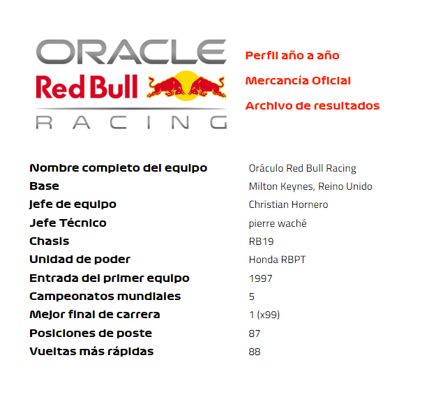
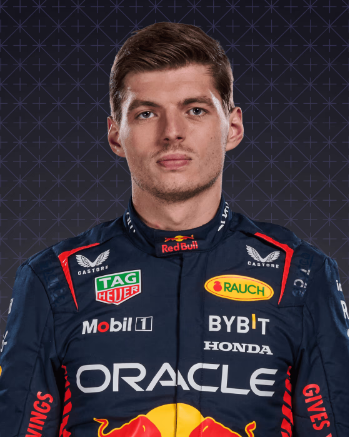
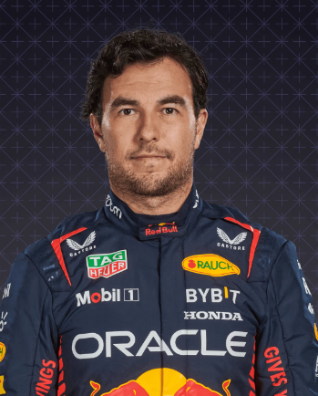

Red Bull

En perfil
Red Bull no era ajeno a la F1, como patrocinadores, antes de ingresar formalmente como equipo oficial en 2004. Sin embargo, la escala de su éxito durante la siguiente década fue asombrosa. Después de un primer podio en 2006, el equipo aceleró en 2009, logrando seis victorias y segundo en la clasificación de constructores. Durante las siguientes cuatro temporadas fueron un tour de force, reclamando dos títulos consecutivos entre 2010 y 2013, con Sebastian Vettel emergiendo como el cuádruple campeón más joven del deporte. Ahora están recuperando esa gloria con un talento igualmente emocionante: uno llamado Max Verstappen...
2022
Después de superar el desafío temprano de Ferrari, domine para obtener el primer título doble desde 2013, con Max Verstappen asegurando un récord de 15 victorias para retener la corona de pilotos. Solo la nube es una multa de $ 7 millones y una reducción en futuras pruebas de túnel de viento por exceder el límite presupuestario de 2021.
2021
Asegura su primer campeonato de pilotos desde 2013, ganando 11 de 22 carreras, y empuja a Mercedes hasta el final en una intensa y, a veces, amarga, lucha de constructores. El nuevo compañero de equipo, Sergio Pérez, brinda un apoyo invaluable a la exitosa candidatura al título de Max Verstappen.
2020
Un solitario segundo en la clasificación, constantemente alejado del medio campo pero rara vez capaz de igualar el ritmo de los campeones Mercedes. Max Verstappen protagoniza, con dos victorias y otros nueve podios, pero Alex Albon queda eliminado para 2021 después de solo dos apariciones entre los tres primeros.
2019
La transición de la potencia de Renault a Honda es notablemente fluida, y las cuatro victorias de Max Verstappen aseguran una cuenta de puntos casi idéntica a la de 2018. Deje a Pierre Gasly a mitad de año en favor del novato Alex Albon, y el progreso al final de la temporada aumenta las esperanzas de un verdadero desafío por el título en 2020.
Pilotos

Max Verstappen

Sergio Perez